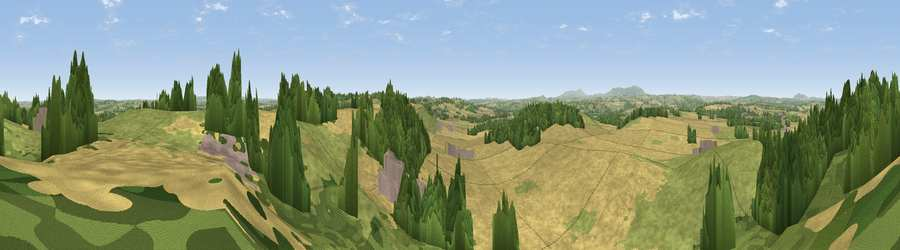

Viewpoint near Claverley
#12797 in England · top 25% of its area beats it · near ClaverleyThe view, rendered

A 360° render of this exact spot computed from the terrain model, tree cover and land cover — summer colours, afternoon light, calibrated against photographs of famous viewpoints. Real trees, hedges and buildings will differ in detail.
The panorama
Grey silhouette: terrain skyline in each direction (720 bearings, Earth curvature and refraction included). Dashed green: skyline with trees (+15 m) and buildings (+8 m) as obstacles. Blue strip: how far the ground is visible on each bearing.
Where the view opens
Wedge length = distance to the farthest visible ground on that bearing (vegetation-aware). Rings at 10, 25 and 50 km.
What fills the view
44% cropland · 29% grassland · 25% woodland · 2% built-up
Angular shares of the visible panorama (visual magnitude), not map area. Landscape diversity 0.50 (0–1 Shannon).
Key numbers
More beautiful places nearby
The staircase of upgrades: each row has a higher view potential than everything closer. Driving times are estimates from straight-line distance, calibrated against real road routing — check an actual route before setting out.
| Place | Direction | Drive | Score |
|---|---|---|---|
| Viewpoint near Quatt | SSE · 4 km | ~10 min | 61.9 |
| Viewpoint near Quatt | SSE · 5 km | ~10 min | 62.1 |
| Viewpoint near Enville | SSE · 8 km | ~16 min | 73.1 |
| Knowle Hill | SW · 12 km | ~23 min | 75.5 |
| Viewpoint near Abdon | WSW · 18 km | ~31 min | 82.6 |
| Viewpoint near Burwarton | WSW · 18 km | ~32 min | 83.4 |
| The Wrekin | NW · 22 km | ~36 min | 85.0 |
| Viewpoint near Little Wenlock | NW · 22 km | ~36 min | 86.6 |
52.52201, -2.34225 · source: screening · position refined by local search. Computed location — check access rights before visiting.